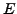

#include <gandalf/vision/fundamental.h>
#include <gandalf/vision/essential.h>
The fundamental matrix [8] encodes all the
geometrical constraints available given two images of a rigid scene.
Given two images with point locations
and
in homogeneous coordinates,
the relationship between image points projected from the same scene point is
Gan_SymMatEigenStruct SymEigen;
Gan_Vector3 *av3Point1, *av3Point2; /* arrays of image points */
Gan_Matrix33 m33F;
/* allocate arrays of image coordinates, one array for each image */
av3Point1 = gan_malloc_array ( Gan_Vector3, 100 );
av3Point2 = gan_malloc_array ( Gan_Vector3, 100 );
/* ... fill arrays av3Point1 and av3Point2 with point correspondence
data for 100 points ... */
/* create structure for computing eigenvalues and eigenvectors,
initialising accumulated matrix S (here 9x9) to zero */
gan_symeigen_form ( &SymEigen, 9 );
/* solve for fundamental matrix */
gan_fundamental_matrix_fit ( av3Point1, av3Point2, 100, &SymEigen, &m33F );
/* free stuff */
gan_symeigen_free ( &SymEigen );
gan_free_va ( av3Point2, av3Point1, NULL );
The essential matrix  is the equivalent of the fundamental matrix in the
case of known camera calibration parameters. In this case the rotation between
the cameras can be computed, and also the translation vector between them
up to an unknown scale factor. The mathematical model is that the images
are related by the equation
The main difference in Gandalf between computing the fundamental and essential matrices is in the computation of the ideal image coordinates. These can be computed by back-projecting the original image coordinates out into 3D camera (ideal image) coordinates, using the Gandalf back-projection function described in Section 5.1. Here is a code fragment to compute the essential matrix, represented by the rotation and translation .
Gan_SymMatEigenStruct SymEigen;
Gan_Vector3 *av3Point1, *av3Point2; /* arrays of image points */
Gan_Camera Camera;
Gan_Euclid3D Pose;
/* allocate arrays of image coordinates, one array for each image */
av3Point1 = gan_malloc_array ( Gan_Vector3, 100 );
av3Point2 = gan_malloc_array ( Gan_Vector3, 100 );
/* ... fill arrays av3Point1 and av3Point2 with point correspondence
data for 100 points ... */
/* build a camera with two radial distortion parameters */
gan_camera_build_radial_distortion_2 ( &Camera,
100.0, 700.0, 500.0, 150.0, 100.0,
0.001, 1.0e-7 );
/* create structure for computing eigenvalues and eigenvectors,
initialising accumulated matrix S (here 9x9) to zero */
gan_symeigen_form ( &SymEigen, 9 );
/* compute essential matrix */
gan_essential_matrix_fit ( av3Point1, av3Point2, 100, &Camera, &Camera,
&SymEigen, &Pose );
/* free stuff */
gan_symeigen_free ( &SymEigen );
gan_free_va ( av3Point2, av3Point1, NULL );
The Gandalf 3D Euclidean transformation structure Gan_Euclid3D is
used to store the result rotation and translation.
Error detection: Both fundamental and essential matrix routines return a boolean value, which is GAN_FALSE on error, invoking the Gandalf error handler.